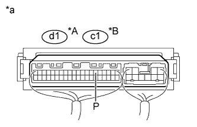
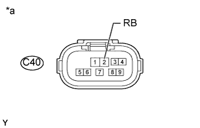
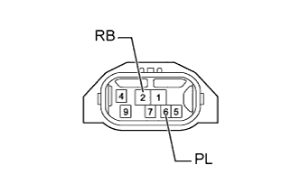

СИСТЕМА ЗАДНИХ СИДЕНИЙ С ЭЛЕКТРОПРИВОДОМ > Цепь датчика положения паркинга / нейтрали |
| 1.ПРОВЕРЬТЕ ЭБУ СКЛАДЫВАНИЯ СИДЕНЬЯ (СИГНАЛ ДАТЧИКА ПОЛОЖЕНИЯ ПАРКИНГА/НЕЙТРАЛИ) |
|  |
Снимите ЭБУ складывания сиденья, не отсоединяя разъемы (Нажмите здесь).
Измерьте напряжение в соответствии со значениями, приведенными в таблице.
| Контакты для подключения диагностического прибора | Условие | Заданные условия |
| d1-6 (P) - масса | Замок зажигания в положении ACC или ON (ВКЛ) Рычаг переключения передач в положении Р | 11-14 В |
| Замок зажигания в положении ACC или ON (ВКЛ) Рычаг переключения передач не в положении Р | Менее 1 В |
| Контакты для подключения диагностического прибора | Условие | Заданные условия |
| c1-6 (P) - масса | Замок зажигания в положении ACC или ON (ВКЛ) Рычаг переключения передач в положении Р | 11-14 В |
| Замок зажигания в положении ACC или ON (ВКЛ) Рычаг переключения передач не в положении Р | Менее 1 В |
| *A | Для левой стороны |
| *B | Для правой стороны |
| *a | Устройство с подсоединенным жгутом проводов (ЭБУ складывания сиденья) |
|
| ||||
| OK | ||
| ||
| 2.ПРОВЕРЬТЕ ЖГУТ ПРОВОДОВ И РАЗЪЕМ (ДАТЧИК ПОЛОЖЕНИЯ ПАРКИНГА/НЕЙТРАЛИ – АККУМУЛЯТОРНАЯ БАТАРЕЯ) |
|  |
Отсоедините разъем выключателя C40.
Измерьте напряжение в соответствии со значениями, приведенными в таблице.
| Контакты для подключения диагностического прибора | Положение переключателя | Заданные условия |
| C40-2 (RB) - масса | Замок зажигания в положении ACC или ON (ВКЛ) | 11–14 В |
| Замок зажигания в положении OFF (ВЫКЛ) | Менее 1 В |
| *a | Вид спереди разъема со стороны жгута проводов: (к датчику положения паркинга/нейтрали в сборе) |
|
| ||||
| OK | |
| 3.ПРОВЕРЬТЕ ДАТЧИК ПОЛОЖЕНИЯ ПАРКИНГА/НЕЙТРАЛИ В СБОРЕ |
|  |
Отсоедините разъем выключателя C40.
Измерьте сопротивление в соответствии со значениями, приведенными в таблице ниже.
| Контакты для подключения диагностического прибора | Состояние | Заданные условия |
| 2 (RB) - 6 (PL) | Рычаг переключения передач в положении Р | Менее 1 Ом |
| 2 (RB) - 6 (PL) | Рычаг переключения передач не в положении Р | 10 кОм или более |
| Результат | Следующий шаг |
| OK | А |
| NG (для моделей с автоматической трансмиссией A343F) | B |
| NG (для моделей с автоматической трансмиссией A750F) | C |
|
| ||||
|
| ||||
| А | |
| 4.ПРОВЕРЬТЕ ЖГУТ ПРОВОДОВ И РАЗЪЕМ (ЭБУ СКЛАДЫВАНИЯ СИДЕНЬЯ – ДАТЧИК ПОЛОЖЕНИЯ ПАРКИНГА/НЕЙТРАЛИ) |
Отсоедините разъем d1*1 или c1*2 ЭБУ.
Отсоедините разъем выключателя C40.
Измерьте сопротивление в соответствии со значениями, приведенными в таблице ниже.
| Контакты для подключения диагностического прибора | Состояние | Заданные условия |
| d1-6 (P) - C40-6 (PL) | Всегда | Менее 1 Ом |
| d1-6 (P) - масса | Всегда | 10 кОм или более |
| Контакты для подключения диагностического прибора | Состояние | Заданные условия |
| c1-6 (P) - C40-6 (PL) | Всегда | Менее 1 Ом |
| c1-6 (P) - масса | Всегда | 10 кОм или более |
|
| ||||
| OK | ||
| ||